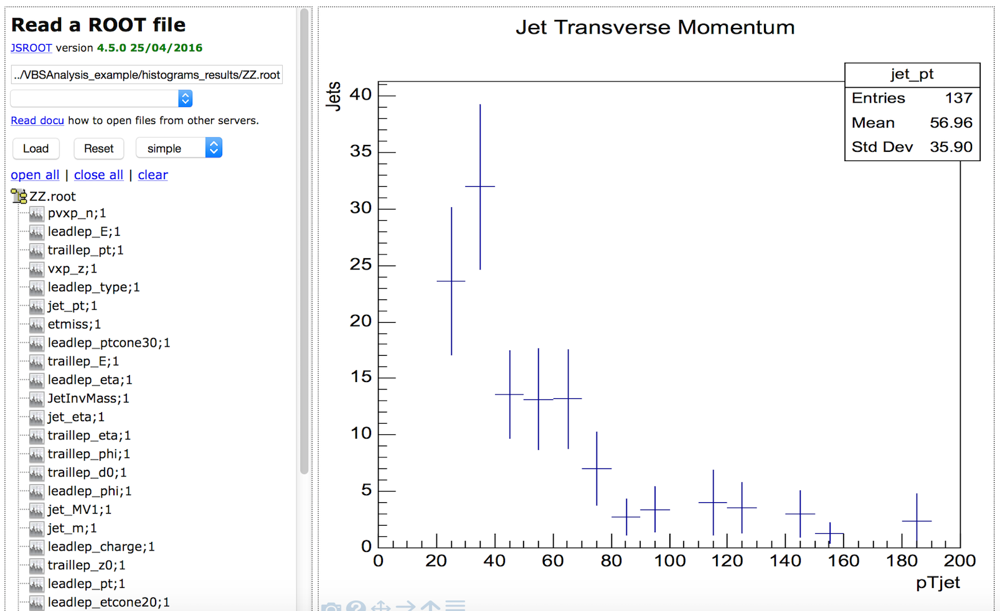
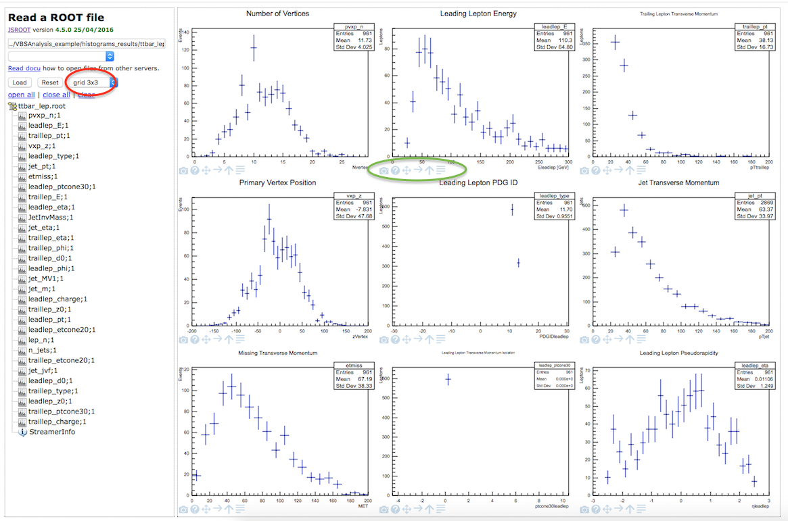

Analysis Browser
ROOTbrowser is a web based tool for displaying and analysing data and Monte-Carlo simulated data.
Select a dataset using the drop-down menu (second text box).

The name of the dataset now appears in the top text box.
Press the "Load" button.

The available variables are then displayed. Select the variable to view the distribution. 
One or more datasets can be loaded.
One or more variables can be displayed at a time. Several display options are available (grid option circled in red below).
'Simple' option just displays one histogram. 'grid' option displays many histograms from two ('grid 1x2' option) up to sixteen ('grid 4x4'option).
If you want to change option after you have selected your file just hit 'Reset' and your histograms are erased, but your file selection remains.
Further display criteria (circled in green below) such as setting the x-axis and/or y-axis to logarithmic scale are available.
